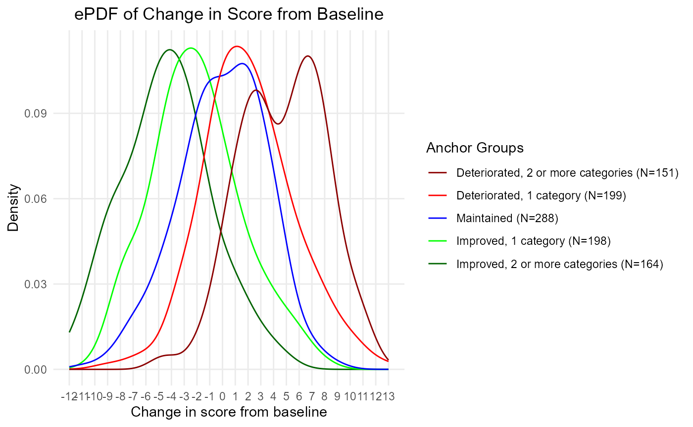
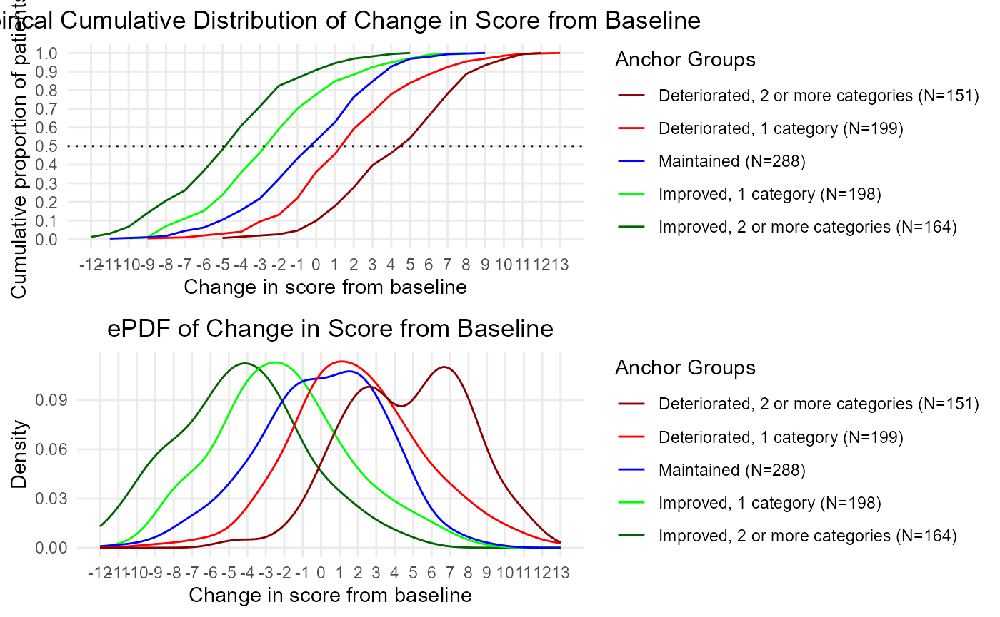
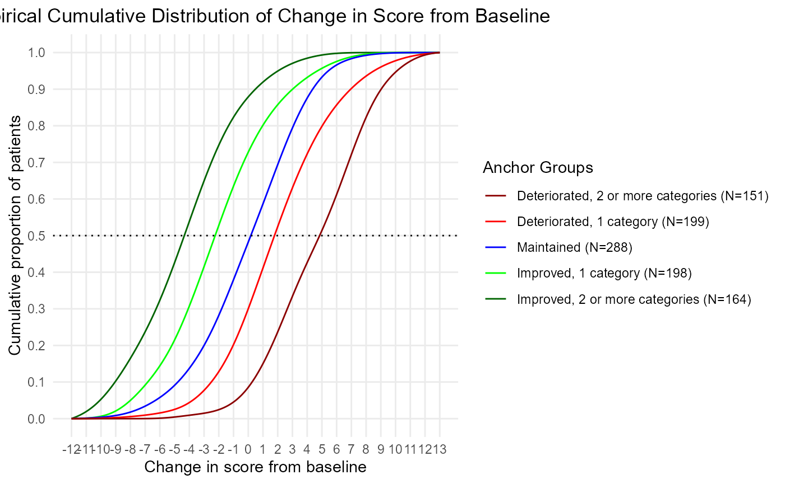
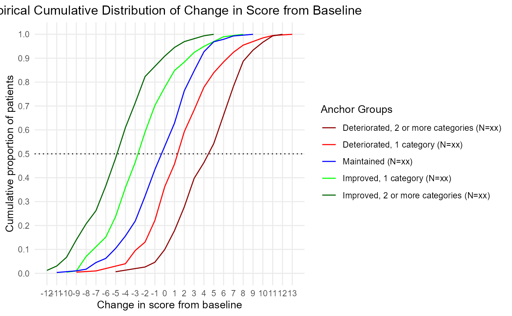
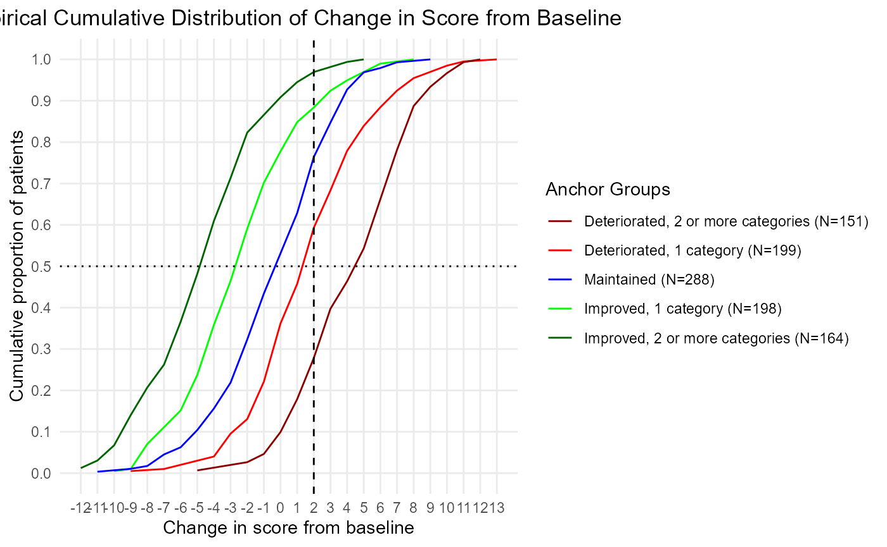

a06_Vignette_MWPC.RmdOutput eCDFs and ePDFs in alignment with FDA Guidance 3.
set.seed(12152021)
sim.out <- COA34::sim_pro_dat_v2(N=1000,
number.timepoints = 3,
Beta.PRO = NULL,
number.of.anchor.groups = 5,
polychor.value = 0.7,
corr = 'ar1',
cor.value = 0.8,
#var.values = c(7.136))
var.values = c(2))
dat <- sim.out$dat
# Simulate IRT items
# use the scores generated as the theta in the IRT model
sim.out2 <- COA34::sim_irt_item(dat = dat, J = 5, K = 4, latent.variable = 'Y_comp')
str(sim.out2)
#> List of 3
#> $ dat :'data.frame': 3000 obs. of 22 variables:
#> ..$ USUBJID : chr [1:3000] "Subject_0001" "Subject_0001" "Subject_0001" "Subject_0002" ...
#> ..$ Time : Factor w/ 3 levels "Time_1","Time_2",..: 1 2 3 1 2 3 1 2 3 1 ...
#> ..$ PGIS : num [1:3000] 3 0 0 3 1 1 2 4 2 1 ...
#> ..$ PGIS_bl : num [1:3000] 3 3 3 3 3 3 2 2 2 1 ...
#> ..$ PGIS_delta: num [1:3000] 0 -3 -3 0 -2 -2 0 2 0 0 ...
#> ..$ ag : num [1:3000] 0 -2 -2 0 -2 -2 0 2 0 0 ...
#> ..$ XB : num [1:3000] 4 3.5 2 4 3.5 2 3 3.5 3 2 ...
#> ..$ error : num [1:3000] 0.811 0.865 -0.112 -0.106 -0.525 ...
#> ..$ Y_comp : num [1:3000] 4.81 4.36 1.89 3.89 2.98 ...
#> ..$ Val_1 : int [1:3000] 2 NA NA 1 NA NA 0 NA NA 2 ...
#> ..$ Val_2 : num [1:3000] 4.97 NA NA 4.9 NA ...
#> ..$ Val_3 : num [1:3000] 7.71 NA NA 5.43 NA ...
#> ..$ Val_4 : num [1:3000] 4.4 NA NA 4.17 NA ...
#> ..$ Val_5 : int [1:3000] 0 NA NA 3 NA NA 3 NA NA 1 ...
#> ..$ Y_mcar : num [1:3000] 4.81 4.36 NA 3.89 2.98 ...
#> ..$ Y_mar : num [1:3000] 4.81 NA NA 3.89 2.98 ...
#> ..$ Y_mnar : num [1:3000] 4.81 4.36 1.89 3.89 2.98 ...
#> ..$ Item_1 : int [1:3000] 2 2 1 1 1 1 2 2 1 1 ...
#> ..$ Item_2 : int [1:3000] 2 1 3 1 1 1 3 2 1 1 ...
#> ..$ Item_3 : int [1:3000] 3 3 1 1 1 2 0 2 1 2 ...
#> ..$ Item_4 : int [1:3000] 3 3 2 2 2 0 0 3 0 2 ...
#> ..$ Item_5 : int [1:3000] 2 3 1 1 1 0 0 2 1 1 ...
#> $ item.param : num [1:5, 1:4] 2 2 2 2 2 -2 -2 -2 -2 -2 ...
#> ..- attr(*, "dimnames")=List of 2
#> .. ..$ : chr [1:5] "Item_1" "Item_2" "Item_3" "Item_4" ...
#> .. ..$ : chr [1:4] "slope" "intercept_1" "intercept_2" "intercept_3"
#> $ item.responses:'data.frame': 3000 obs. of 5 variables:
#> ..$ Item_1: int [1:3000] 2 2 1 1 1 1 2 2 1 1 ...
#> ..$ Item_2: int [1:3000] 2 1 3 1 1 1 3 2 1 1 ...
#> ..$ Item_3: int [1:3000] 3 3 1 1 1 2 0 2 1 2 ...
#> ..$ Item_4: int [1:3000] 3 3 2 2 2 0 0 3 0 2 ...
#> ..$ Item_5: int [1:3000] 2 3 1 1 1 0 0 2 1 1 ...
dat <- sim.out2$dat
# Score the PRO - just take a simple sum score here:
dat$PRO.score <- apply(dat[, grep('Item', colnames(dat))], 1, sum)
# Create the same PRO score, but with MAR drop-out:
dat$PRO.score_mar <- dat$PRO.score
dat$PRO.score_mar[is.na(dat$Y_mar)] <- NA
# Note that you've just set the PRO score to missing wherever the Y_mar variable is missing
# Now for the other missing types:
dat$PRO.score_mcar <- dat$PRO.score_mnar <- dat$PRO.score
dat$PRO.score_mcar[is.na(dat$Y_mcar)] <- NA
dat$PRO.score_mnar[is.na(dat$Y_mnar)] <- NA
aggregate(cbind(PRO.score, PRO.score_mcar, PRO.score_mar, PRO.score_mnar) ~ Time,
function(x) mean(x, na.rm = T),
data = dat,
na.action = na.pass)
#> Time PRO.score PRO.score_mcar PRO.score_mar PRO.score_mnar
#> 1 Time_1 7.475 7.475000 7.475 7.475
#> 2 Time_2 7.475 7.405333 5.964 5.800
#> 3 Time_3 7.464 7.530000 5.206 4.124
# You already have the PGIS_bl and PGIS_delta in the generated data,
# you wouldn't have that in a real dataset, so drop that first
dat <- dat[, !(colnames(dat) %in% c('PGIS_bl', 'PGIS_delta'))]
# This makes this more realistic
# use the function below:
dat <- COA34::compute_anchor_delta(dat = dat,
subject.id = 'USUBJID',
time.var = 'Time',
anchor = 'PGIS')
dat <- COA34::compute_change_score(dat = dat,
subject.id = 'USUBJID',
time.var = 'Time',
score = c('PRO.score', 'PRO.score_mcar',
'PRO.score_mar', 'PRO.score_mnar'))
# The function creates variables with the same name plus "_delta":
str(dat)
#> 'data.frame': 3000 obs. of 34 variables:
#> $ USUBJID : chr "Subject_0001" "Subject_0001" "Subject_0001" "Subject_0002" ...
#> $ Time : Factor w/ 3 levels "Time_1","Time_2",..: 1 2 3 1 2 3 1 2 3 1 ...
#> $ PGIS : num 3 0 0 3 1 1 2 4 2 1 ...
#> $ ag : num 0 -2 -2 0 -2 -2 0 2 0 0 ...
#> $ XB : num 4 3.5 2 4 3.5 2 3 3.5 3 2 ...
#> $ error : num 0.811 0.865 -0.112 -0.106 -0.525 ...
#> $ Y_comp : num 4.81 4.36 1.89 3.89 2.98 ...
#> $ Val_1 : int 2 NA NA 1 NA NA 0 NA NA 2 ...
#> $ Val_2 : num 4.97 NA NA 4.9 NA ...
#> $ Val_3 : num 7.71 NA NA 5.43 NA ...
#> $ Val_4 : num 4.4 NA NA 4.17 NA ...
#> $ Val_5 : int 0 NA NA 3 NA NA 3 NA NA 1 ...
#> $ Y_mcar : num 4.81 4.36 NA 3.89 2.98 ...
#> $ Y_mar : num 4.81 NA NA 3.89 2.98 ...
#> $ Y_mnar : num 4.81 4.36 1.89 3.89 2.98 ...
#> $ Item_1 : int 2 2 1 1 1 1 2 2 1 1 ...
#> $ Item_2 : int 2 1 3 1 1 1 3 2 1 1 ...
#> $ Item_3 : int 3 3 1 1 1 2 0 2 1 2 ...
#> $ Item_4 : int 3 3 2 2 2 0 0 3 0 2 ...
#> $ Item_5 : int 2 3 1 1 1 0 0 2 1 1 ...
#> $ PRO.score : int 12 12 8 6 6 4 5 11 4 7 ...
#> $ PRO.score_mar : int 12 NA NA 6 6 4 5 11 NA 7 ...
#> $ PRO.score_mnar : int 12 12 8 6 6 4 5 11 4 7 ...
#> $ PRO.score_mcar : int 12 12 NA 6 6 4 5 11 NA 7 ...
#> $ PGIS_bl : num 3 3 3 3 3 3 2 2 2 1 ...
#> $ PGIS_delta : num 0 -3 -3 0 -2 -2 0 2 0 0 ...
#> $ PRO.score_bl : int 12 12 12 6 6 6 5 5 5 7 ...
#> $ PRO.score_mcar_bl : int 12 12 12 6 6 6 5 5 5 7 ...
#> $ PRO.score_mar_bl : int 12 12 12 6 6 6 5 5 5 7 ...
#> $ PRO.score_mnar_bl : int 12 12 12 6 6 6 5 5 5 7 ...
#> $ PRO.score_delta : int 0 0 -4 0 0 -2 0 6 -1 0 ...
#> $ PRO.score_mcar_delta: int 0 0 NA 0 0 -2 0 6 NA 0 ...
#> $ PRO.score_mar_delta : int 0 NA NA 0 0 -2 0 6 NA 0 ...
#> $ PRO.score_mnar_delta: int 0 0 -4 0 0 -2 0 6 -1 0 ...
dat <- COA34::compute_anchor_group(dat = dat,
anchor.variable = 'PGIS_delta')This functions computes a table of all of the meaningful change thresholds.
thr <- COA34::compute_thresholds(dat = dat,
anchor.group = 'anchor.groups',
time.var = 'Time',
change.score = 'PRO.score_delta')Output the table to include in the report:
library(R2Word)
R2Word::dump_df_mat_to_file(out = thr,
table.title = 'Anchor Group Thresholds',
NA.string = '-',
decimals = c(2, 2, 0, 1),
file.name = 'thr',
print.dir = print.dir)Anchor Group Thresholds | |||||
PRO Change Score |
Anchor Group |
Mean |
Median |
N |
Percent |
PRO.score_delta |
Improved, 2 or more categories |
-4.38 |
-4.00 |
164 |
16.4 |
PRO.score_delta |
Improved, 1 category |
-2.04 |
-2.00 |
198 |
19.8 |
PRO.score_delta |
Maintained |
-0.01 |
0.00 |
288 |
28.8 |
PRO.score_delta |
Deteriorated, 1 category |
2.03 |
2.00 |
199 |
19.9 |
PRO.score_delta |
Deteriorated, 2 or more categories |
4.71 |
5.00 |
151 |
15.1 |
NB, 12.16.21: Not run - not sure how useful this function is.
This function computes the proportion of subjects surpassing a given threshold. So let’s say you are looking to estimate meaningful improvement, using a 1-category change on the anchor as the criteria. In this case, you’d use the median PRO score of the anchor group “Improved 1 category” and compute the proportion of subjects with a PRO change score that was that or less (assuming that improvement is negative in PRO change scores).
cap <- COA34::compute_prop_surp(dat = dat,
anchor.group = 'anchor.groups',
time.var = 'Time',
change.score = 'Y_comp_delta',
threshold.label = 'Improved_1',
mean.or.median = 'median')
library(R2Word)
R2Word::dump_df_mat_to_file(out = cap$anchor.table,
table.title = paste0('Proportion Achieving Meaningful Improvement in ', cap$change.score),
NA.string = '-',
table.footnote = cap$footnote.anchor.table,
decimals = c(0, 0, 1),
file.name = 'cap',
print.dir = print.dir)We’re going to do this two ways, first the easy way, with a function that automates it. Then we will go and do it by hand, to give you code to customize.
This way, if the function doesn’t give you exactly what you need, you have something to modify and can quickly get what you need.
This is the most expedient approach. You can use this if you have 200 eCDF/ePDFs to compute.
NB, 12.16.21: function ggplot2_eCDF is deprecated, using ggplot2_eCDF_v2 instead.
ecdf <- COA34::ggplot2_eCDF_v2(dat = dat,
anchor.group = 'anchor.groups',
time.var = 'Time',
change.score = 'PRO.score_delta')
epdf <- COA34::ggplot2_ePDF(dat = dat,
anchor.group = 'anchor.groups',
time.var = 'Time',
change.score = 'PRO.score_delta')
# Let's look at them:
plot(ecdf)
plot(epdf)
# Plot both:
gridExtra::grid.arrange(ecdf, epdf, ncol = 1)
Note that you can chooose to compute the kernel density for the eCDF if you want some smoothed eCDFs. These eCDFs will have lines that don’t overlap as much so it’s easier to review and interpret the eCDF. This kernel density is the same as the one used to plot the ePDFs.
The default is smoothed.ecdf = FALSE. Set it equal to TRUE.
ecdf.smoothed <- COA34::ggplot2_eCDF_v2(dat = dat,
smoothed.ecdf = TRUE,
anchor.group = 'anchor.groups',
time.var = 'Time',
change.score = 'PRO.score_delta')
# Compare the two:
plot(ecdf)
plot(ecdf.smoothed)
The plots do not render well in a browser. We should print them out to a file instead.
Print out the ggplot2 plots to a .png file. You could do this in a loop if you had many figures to print out.
#---------------------------------
# Print out separately:
file.name <- 'Example_eCDF'
png(file = paste0(file.name, '.png'), units="in", width=11, height=8.5, res=300)
ecdf
dev.off()
#-------------------------------
file.name <- 'Example_eCDF_smoothed'
png(file = paste0(file.name, '.png'), units="in", width=11, height=8.5, res=300)
ecdf.smoothed
dev.off()
#-------------------------------
file.name <- 'Example_ePDF'
png(file = paste0(file.name, '.png'), units="in", width=11, height=8.5, res=300)
epdf
dev.off()
# Note: you can use the paste0 function to use this in a loop
# update anchor_name in the loop
# file.name = paste0('eCDF_ePDF', anchor_name)
#---------------------------------------------------
# Print out together:
file.name <- 'Example_stacked_eCDF_ePDF'
png(file = paste0(file.name, '.png'), units="in", width=11, height=8.5, res=300)
gridExtra::grid.arrange(ecdf, epdf, ncol = 1)
dev.off()There’s an option to return shell figures - this just means the sample sizes are xx-ed out. This is a nice option if you have to put together a proposal that contains shell figures and tables.
ecdf<- COA34::ggplot2_eCDF_v2(dat = dat,
shell.table = TRUE,
anchor.group = 'anchor.groups',
time.var = 'Time',
change.score = 'PRO.score_delta')
plot(ecdf)
You may want to create a custom plot. There may be one or two scores that are the focus of your report, and for those, you need to make customized modifications.
If you want, you can always pull the R code that is inside these COA34 functions and customize that code to make it look the way you want.
However, the nice thing about ggplot2 objects is how you can just add to it. Let’s say you want to add a dashed line representing the threshold of deterioration to your eCDF. That is easy to do:
p1 <- COA34::ggplot2_eCDF_v2(dat = dat,
anchor.group = 'anchor.groups',
time.var = 'Time',
change.score = 'PRO.score_delta')
p1 <- p1 + geom_vline(
xintercept = thr$Median[thr$`Anchor Group` == 'Deteriorated, 1 category'],
linetype = 'dashed')
plot(p1)